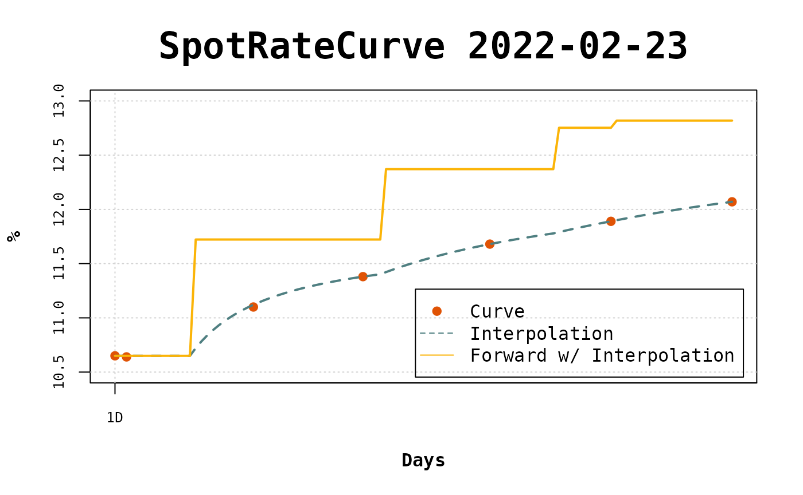

Interpolação flat-forward nas reuniões do COPOM
flatforwardCOPOM-pt.RmdIntrodução
A estrutura a termo de juros prefixados utilizada no Brasil se apresenta em duas versões, a primeira é formada com base nos contratos futuros de Taxa DI (DI1) negociados na B3. A segunda versão pode ser extraída dos títulos públicos prefixados, negociados no Tesouro Direto e que têm preços de referência divulgados na ANBIMA. A versão mais utilizada é formada a partir dos contratos futuros de DI1. Dessa maneira, os vértices da curva correspondem aos vencimentos dos contratos futuros.
O método de interpolação flat-forward (Hagan and West 2006) é comumente utilizado para interpolar a curva de juros prefixados, e a interpolação é realizada a partir dos vencimentos dos futuros. Entretanto, na parte curta da curva, referente ao curto prazo, dentro do primeiro ano, a dinâmica dos juros é determinada pelo Comitê de Política Monetária (COPOM).
O COPOM reune-se periodicamente para definir o nível da taxa SELIC que por sua vez influencia a taxa DI, utilizada no mercado interbancário. Dessa maneira, é esperado que esta taxa de curto prazo mude de nível após as reuniões do Comitê. Contudo, aplicando a interpolação flat-forward a curva de juros com vencimentos dos futuros e calculando as taxas a termo diárias observa-se que as mudanças de nível nas taxas de juros, geradas pela interpolação, ocorrem após cada vértice de vencimento de futuros. Portanto, temos que, para o curto prazo, a interpolação cria um comportamento diferente do que é observado. Assim, é necessário realizar a interpolação flat-forward, para a parte curta da curva, considerando as reuniões do COPOM (Carreira and Brostowicz Jr 2016), fazendo com que as taxas de juros a termo fiquem constante entre as reuniões.
Vamos construir um exemplo com a curva de juros prefixados para a data de referência 23/02/2022. Neste exemplo vamos observar as taxas a termo e as datas de reunião do COPOM.
library(fixedincome)
library(flatforwardCOPOM)
refdate <- as.Date("2022-02-23")
terms <- c(1, 3, 25, 44, 66, 87, 108, 131, 152, 172, 192, 214, 236, 277)
rates <- c(
0.1065, 0.1064, 0.111, 0.1138, 0.1168, 0.1189, 0.1207, 0.1219,
0.1227, 0.1235, 0.1234, 0.1236, 0.1235, 0.1235
)
curve <- spotratecurve(
rates, terms, "discrete", "business/252", "Brazil/ANBIMA",
refdate = refdate
)
interpolation(curve) <- interp_flatforward()Aqui criamos a curva e abaixo construímos o gráfico com as taxas de juros diários a termo (linha azul) e destacamos as datas de reunião (linha pontilhada em vermelho).
fwd_curve <- curve[[1:277]] |> forwardrate()
plot(1:277, fwd_curve * 100, type = "l", col = "blue",
xlab = "", ylab = "", main = "Curva de Juros Diários a Termo")
dates <- get_copom_dates(refdate)
copom_du <- bizdays(refdate, dates, "Brazil/ANBIMA")
abline(v = copom_du, lty = "dashed", col = "red")
No gráfico observasse que as mudanças de nível das taxas a termo ocorrem entre duas reuniões, o que sabemos que não ser o comportamento esperado para taxas no curto prazo.
Dessa maneira buscam-se formas de realizar uma interpolação que, na parte curta da curva, as taxas a termo apresentem mudança de nível apenas nas reuniões do comitê.
Vamos considerar as reuniões que acontecem no horizonte de um ano nesta abordagem, e dado que estas reuniões acontecem a cada 45 dias, aproximadamente, teremos 8 reuniões em média neste intervalo.
Esta metodologia foi abordada em (Carreira and Brostowicz Jr 2016), onde os contratos futuros são considerados da curva de juros a interpolação considerando as reuniões se baseia nas relações de não arbitragem das taxas a termo e (Varga 2020) utiliza contratos de títulos públicos prefixados em um processo de otimização que visa minimizar o erro no apreçamento destes contratos utilizando uma estrutura a termo que apresenta mudança de nível nas reuniões.
O objetivo aqui é trazer a implementação destas abordagens, trazendo a luz as peculiaridades que se apresentam e as eventuais alternativas para contorná-las.
Na próxima sessão será apresentada a metodologia de interpolação flat-forward considerando as reuniões do COPOM, os casos particulares e as alternativas de solução. A sessão seguinte aborda o processo que minimiza do erro de apreçamento dos títulos públicos e adicionalmente submete-se a este processo os contratos futuros, com o objetivo de comparar com a metodologia anterior. No fim temos a comparação dos resultados das diferentes abordagens e a conclusão.
It attachs bizdays and fixedincome.
Create a curve
Let’s create by hand the curve to be used in this tutorial. You must provide the curve terms and corresponding rates. The terms must be provided according to daycount used.
Here we use the daycount business/252, so the terms are business days.
Create the FlatForwardCOPOM interpolation
Now we have a curve, we define the interpolation method by creating an Interpolation object with the function interp_flatforwardcopom. We pass a vector with the dates of the meetings to be used in the interpolation and set conflicts = "second". There are periods between meetings that have two points and, in this cases, the second point will be used in the interpolation.
Once the Interpolation object is created, it is set to the curve with the interpolation<- method.
copom_dates <- as.Date(
c("2022-03-17", "2022-05-05", "2022-06-17", "2022-08-04")
)
interpolation(curve) <- interp_flatforwardcopom(copom_dates, "second")Visualize the interpolation
With everything set the curve can be easily viewed with plot.
plot(curve,
use_interpolation = TRUE, show_forward = TRUE,
legend_location = "bottomright"
)
To compare with the flat forward interpolation let’s visualize the curve with this different intepolation.
interpolation(curve) <- interp_flatforward()
plot(curve,
use_interpolation = TRUE, show_forward = TRUE,
legend_location = "bottomright"
)
In the long term there isn’t mush difference, but in the short term the interpolated points and the forward rates are fairly different.
Referências
Carreira, Marcos CS, and Richard J Brostowicz Jr. 2016. Brazilian Derivatives and Securities: Pricing and Risk Management of Fx and Interest-Rate Portfolios for Local and Global Markets. Springer.
Hagan, Patrick S, and Graeme West. 2006. “Interpolation Methods for Curve Construction.” Applied Mathematical Finance 13 (2): 89–129.
Varga, Gyorgy. 2020. “On the Fitting of the Term Structure Short-End.” https://www.youtube.com/watch?v=YfQ9hBlcGxk.